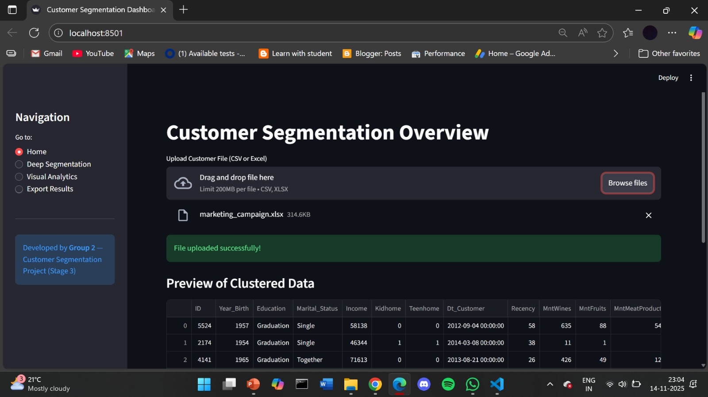
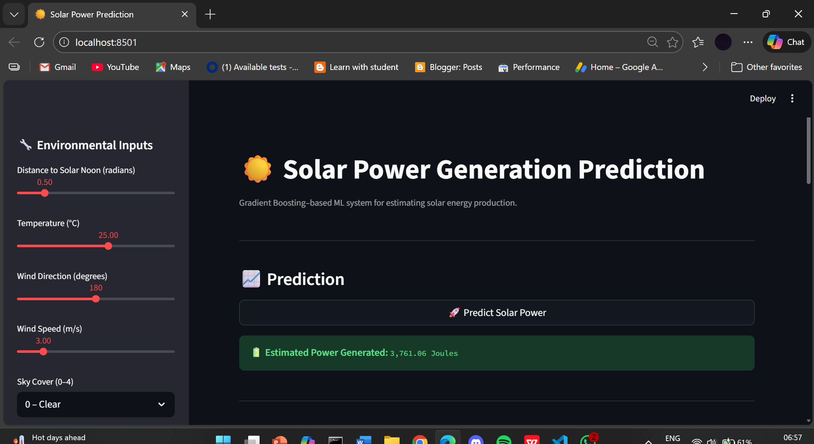
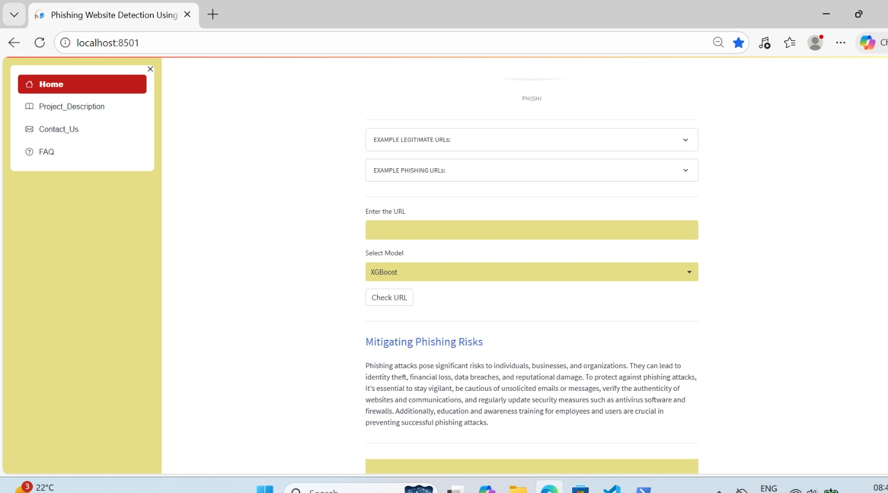

Built a K-Means customer segmentation model with strong cluster separation, validated using Silhouette Score and PCA.
Built a Book Recommendation System using Collaborative Filtering (Truncated SVD) with Python and Scikit-learn, deployed as a real-time Streamlit web application.

Built and deployed a solar power prediction system using Python, Scikit-learn (Gradient Boosting), feature engineering, and Streamlit with MAE, RMSE, and R² evaluation.

Deployed a multi-layered phishing detection system using Python, Scikit-learn and Fuzzy Logic to analyze URL characteristics, domain patterns, and content quality, enabling real-time identification of malicious websites without third-party dependencies.